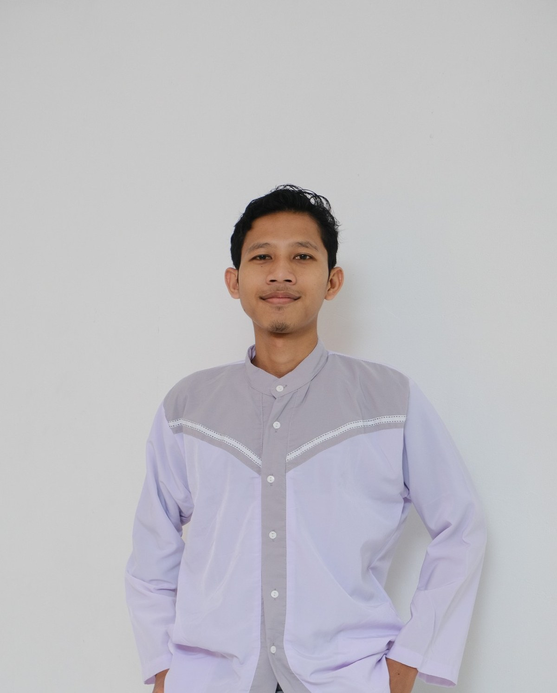

POWER BI
Rice Production
& Food Security
& Food Security
Rice Production & Food Security Dashboard
A Power BI project exploring harvested area, rice production, and food security indicators by province.
STATISTICS & DATA SCIENCE
I’m Tsalis Ainur Rofi, a Statistics and Data Science student at Universitas Negeri Semarang, currently developing practical skills in data analysis, visualization, and programming.

01 — ABOUT
I’m interested in the process of turning raw data into information that people can understand and use. My current learning path focuses on data analysis, visualization, statistical thinking, and practical programming.
I started with tools such as Microsoft Excel and Google Sheets, then expanded into SQL, R, Power BI, Looker Studio, and Python through academic work, mini projects, courses, and organizational activities.
I’m still learning, so this portfolio is intentionally focused on work I have actually explored rather than presenting myself as an expert.
02 — PROJECTS
A growing collection of academic projects, dashboards, analyses, and mini projects.
A Power BI project exploring harvested area, rice production, and food security indicators by province.
A collection of practice projects covering data cleaning, formulas, PivotTables, analysis, and structured reporting.
Statistical programming and analysis projects published on RPubs as part of my ongoing R learning journey.
Open RPubs →An evolving collection of Python practice in Google Colab, focused on building foundations for data work.
Projects will be added as they are ready.More project screenshots and case-study details can be added without changing the website structure.
03 — SKILLS
04 — EXPERIENCE
Organizational work has helped me practice coordination, documentation, and structured problem solving.
Manage IMPP’s calendar and maintain Google Sheets records of income, expenses, program budget allocations, and cash, using formulas and Apps Script to simplify data entry.
Tracked department cash in Google Sheets using dynamic formulas and was responsible for infographics.
Served as deputy field coordinator for IMPP’s community service program.
Created a Google Sheets equipment list for WSE, using formulas to keep the information dynamic.
05 — LEARNING
Selected learning areas that support my development toward data-focused roles.
Data formatting, PivotTables, formulas, analysis, and related spreadsheet workflows.
Dashboard development, data visualization, Power Query, and related learning modules.
Data structures, statistical analysis, regression, and introductory machine learning.
SQL learning and data-related coursework supporting analytical workflows.
Certificate details can be linked individually later; the site does not expose private certificate files by default.
06 — CONNECT
I’m always open to learning, exchanging ideas, and connecting with people interested in data and analytics.